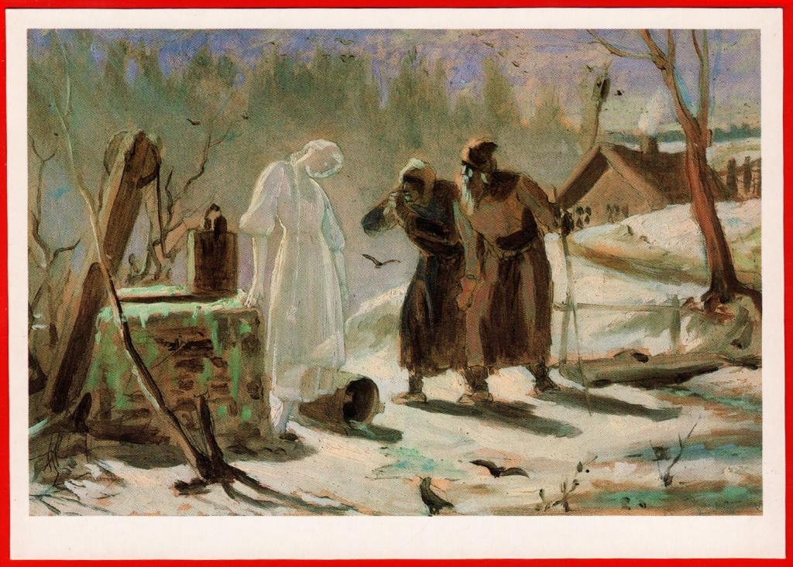

Название работы
Название: Тающая Снегурочка
Автор: Василий Григорьевич Перов
Описание: Эскиз к образу Снегурочки, который передает атмосферу зимней сказки и волшебства. В работе мастерски соединены элементы реалистичного и символического изображения.
Стиль: Романтизм
Техника: Масло на холсте
Цена: 50,000 рублей.